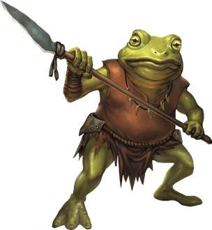

Bullywug
Life as a bullywug is nasty, brutish, and wet. These frog-headed amphibious humanoids must stay constantly moist, dwelling in rainy forests, marshes, and damp caves. Always hungry and thoroughly evil, bullywugs overwhelm opponents with superior numbers when they can, but they flee from serious threats to search for easier prey.

Bullywugs have green, gray, or mottled yellow skin that shifts through shades of gray, green, and brown, allowing them to blend in with their surroundings. They wear crude armor and wield simple weapons, and can deliver a powerful bite to foes that press too close.
Foul Aristocracy. Bullywugs consider themselves the right and proper rulers of the swamps. They follow an etiquette of sorts when dealing with outsiders and each other, subject to the whims and fancies of their leader — a self-styled lord of the muck. Bullywugs introduce themselves with grand-sounding titles, make great shows of bowing and debasing themselves before their superiors, and endlessly vie to win their superiors' favor.
A bullywug has two ways to advance among its kind. It can either murder its rivals, though it must take pains to keep its criminal deeds secret, or it can find a treasure or magic item and present it as tribute or a token of obeisance to its liege. A bullywug that murders its rivals without cunning is likely to be executed, so it's more common for bullywugs to stage raids against caravans and settlements, with the goal of securing precious baubles to impress their lords and win their good graces. Invariably, such fine goods are reduced to filthy tatters through abuse and neglect. Once a gift loses its sheen, a bullywug lord invariably demands that its subjects bring it more treasure as tribute.
Unruly Diplomacy. Bullywugs love nothing more than lording over those who trespass on their territories. Their warriors attempt to capture intruders rather than simply slaying them.
Captives are dragged before the king or queen — a bullywug of unusually large size — and forced to beg for mercy. Bribes, treasure, and flattery can trick the bullywug ruler into letting its captives go, but not before it tries to impress its "guests" with the majesty of its treasure and its realm. Struck with a deep inferiority complex, bullywug lords fancy themselves as kings and queens, but desperately crave the fear and respect of outsiders.
Amphibian Allies. Bullywugs speak a language that allows them to communicate over large areas by croaking like frogs. News of intruders or other events in the swamp spread within minutes across this crude communication system.
Simple concepts in the language are understandable to frogs and toads. Bullywugs use this capability to form strong bonds with giant frogs, which they train as guardians and hunters. Larger specimens are sometimes used as mounts as well. The frogs' ability to swallow creatures whole provides a bullywug hunting band an easy means of carrying prey back to their villages.
Environment
Swamp
Token

Bullywug
Medium humanoid, neutral evil
- Armor Class 15 (hide armor, shield)
- Hit Points 11 (2d8 + 2)
- Speed 20 ft., swim 40 ft.
STR DEX CON INT WIS CHA 12 (+1) 12 (+1) 13 (+1) 7 (-2) 10 (+0) 7 (-2)
- Proficiency Bonus +2
- Saving Throws
- Damage Vulnerabilities
- Damage Resistances
- Damage Immunities
- Condition Immunities
- Skills Stealth +3
- Senses passive Perception 10
- Languages Bullywug
- Challenge 1/4
Amphibious. The bullywug can breathe air and water.
Speak with Frogs and Toads. The bullywug can communicate simple concepts to frogs and toads when it speaks in Bullywug.
Swamp Camouflage. The bullywug has advantage on Dexterity (Stealth) checks made to hide in swampy terrain.
Standing Leap. The bullywug's long jump is up to 20 feet and its high jump is up to 10 feet, with or without a running start.
Actions
Multiattack. The bullywug makes two melee attacks: one with its bite and one with its spear.
Bite. Melee Weapon Attack: +3 to hit, reach 5 ft., one target. Hit: 3 (1d4 + 1) bludgeoning damage.
Spear. Melee or Ranged Weapon Attack: +3 to hit, reach 5 ft. or range 20/60 ft., one target. Hit: 4 (1d6 + 1) piercing damage, or 5 (1d8 + 1) piercing damage if used with two hands to make a melee attack.